Flexible-time evaluation
Evaluate the same model across varying observation and forecast durations, including unseen duration combinations.
Scalable, scene-aligned full-body HOI data from one moving RGB-D camera, with FlexHOI-Bench for flexible-time joint prediction.
The University of Hong Kong


Full-body human motion, dynamic objects, and room-scale geometry in a shared scene coordinate frame, paired with semantic annotations.
Scene × human × object

Drag to orbit · Scroll to zoom
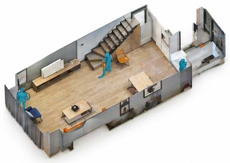
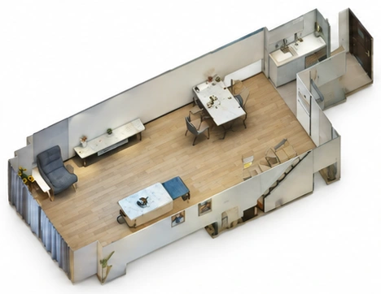
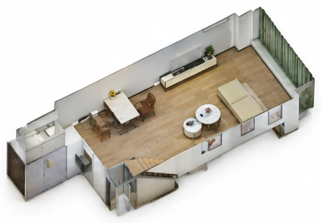
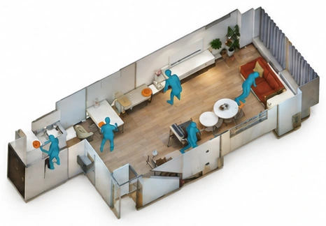
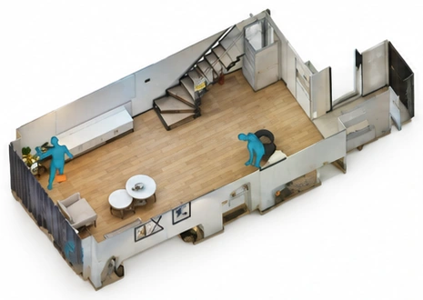
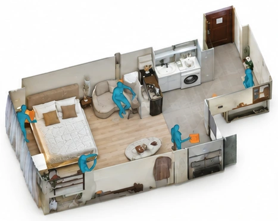
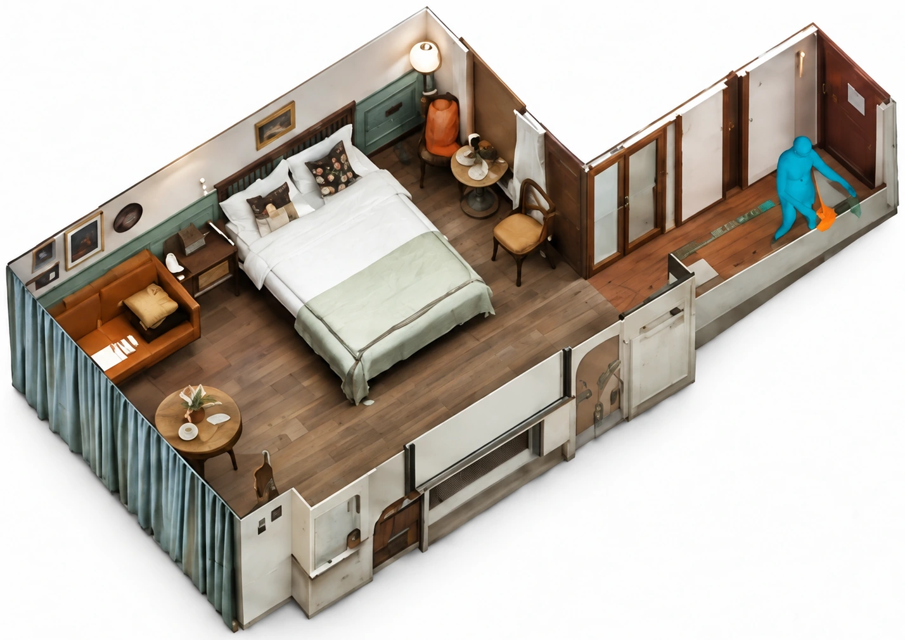
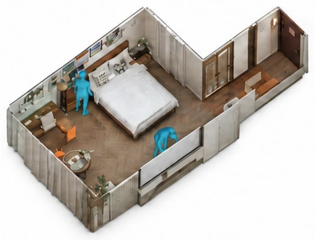
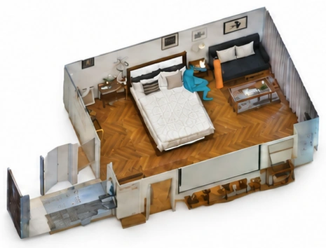
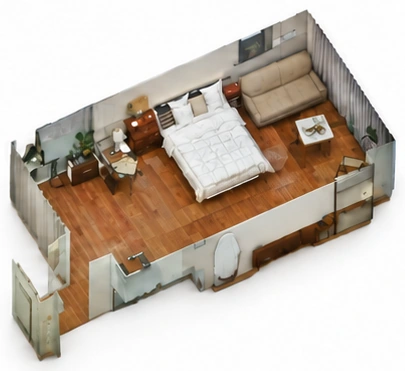
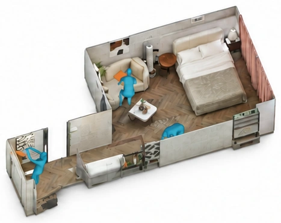
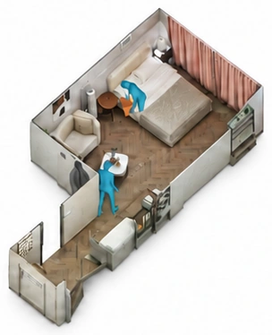

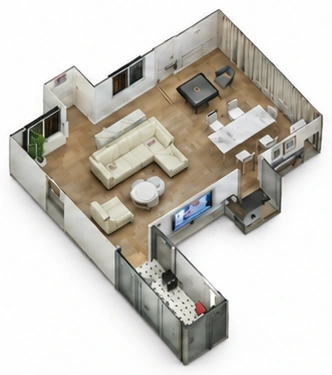
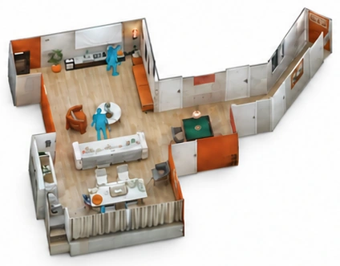
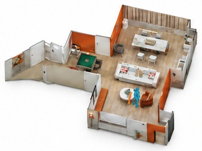
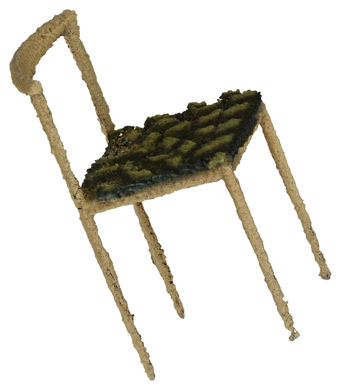
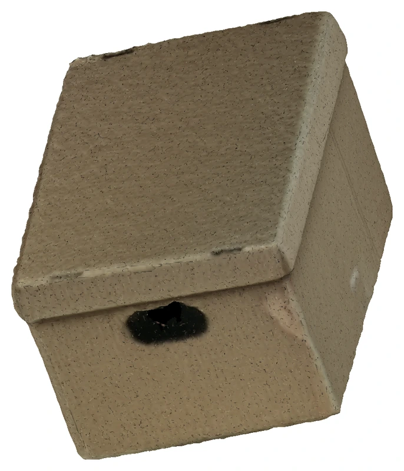
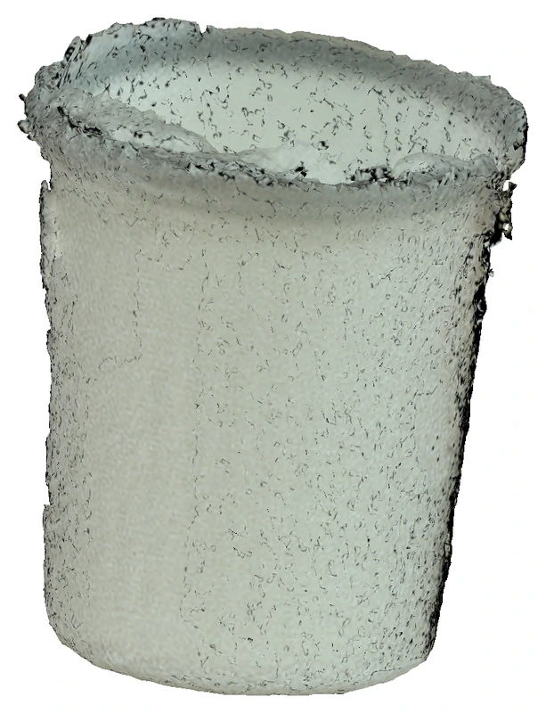
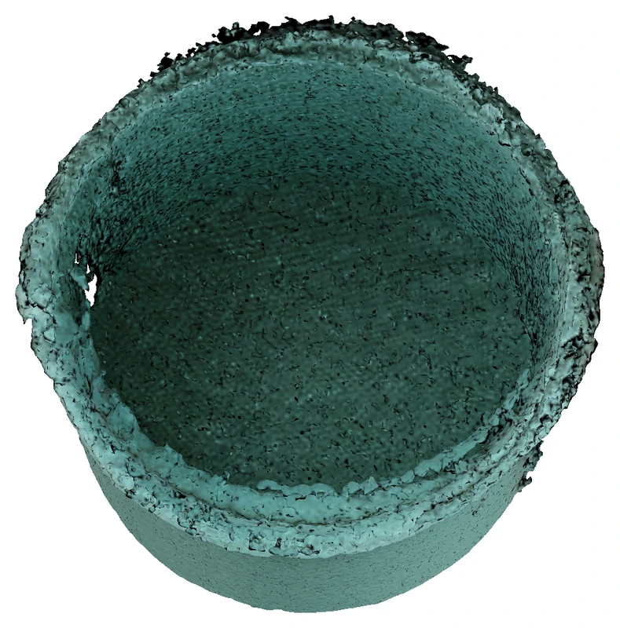
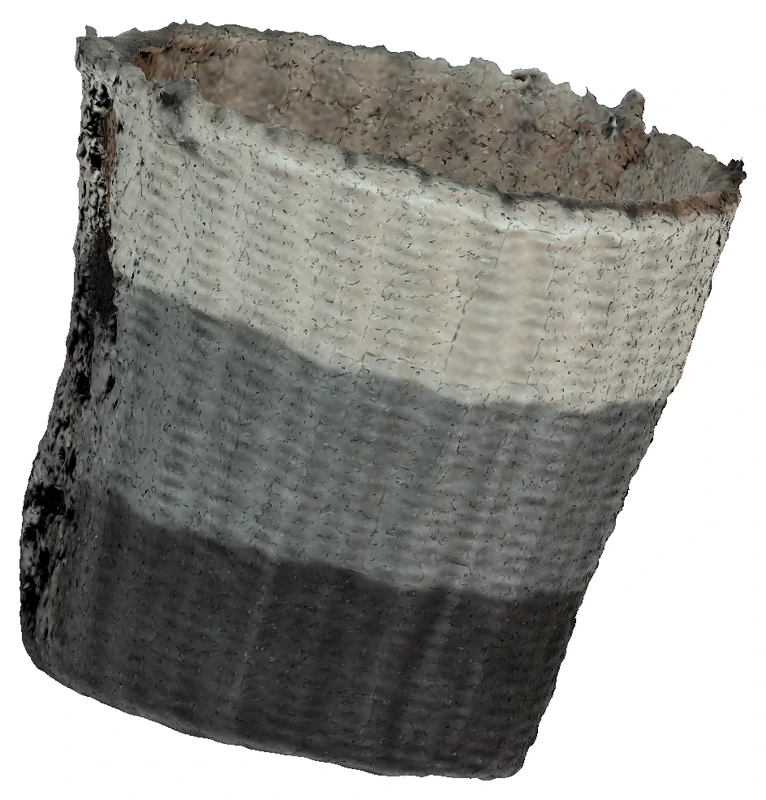
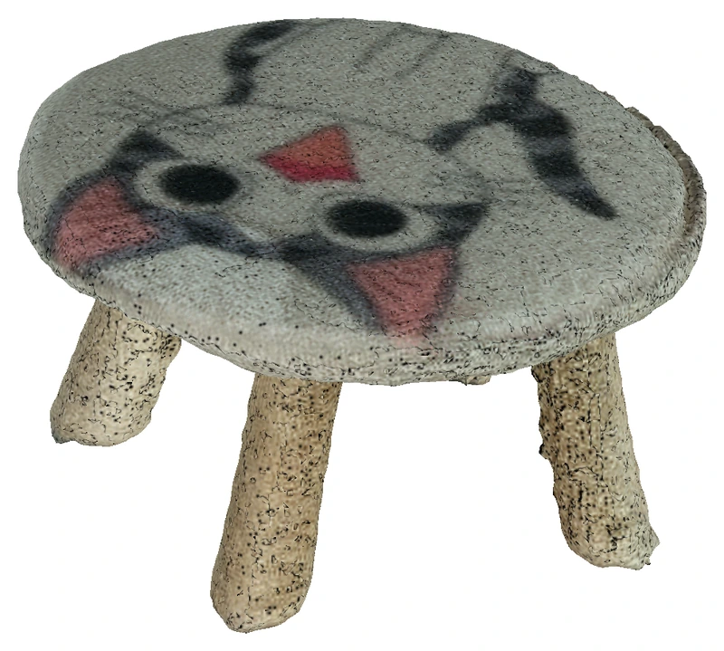
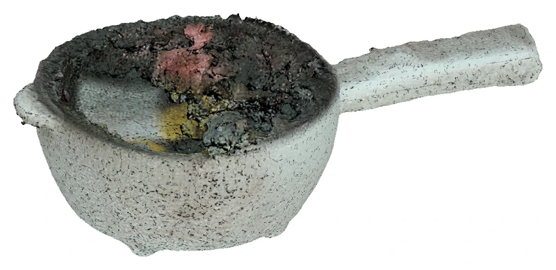
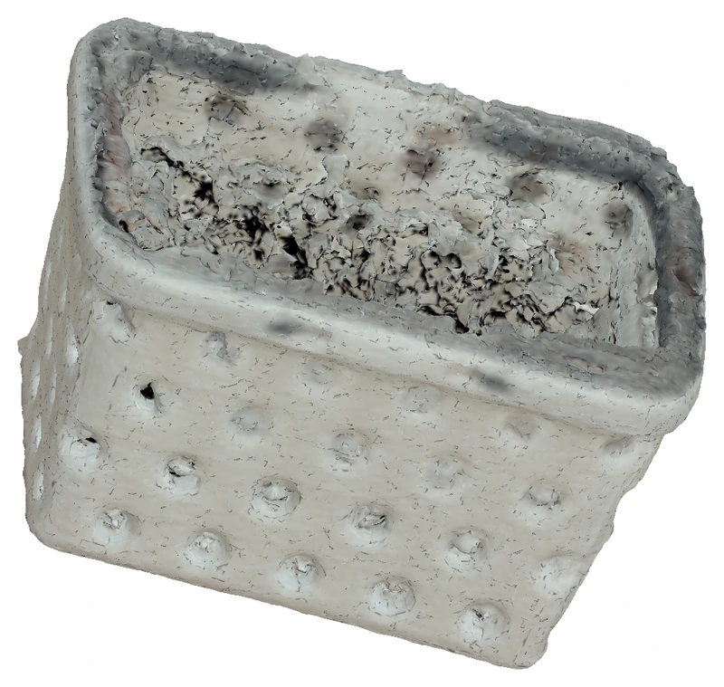
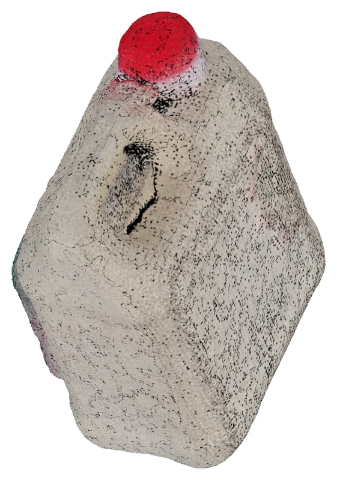
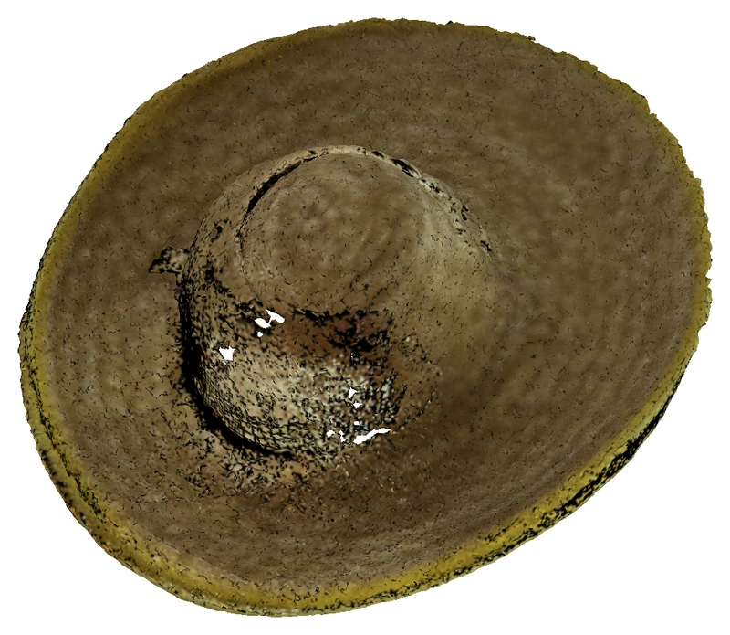
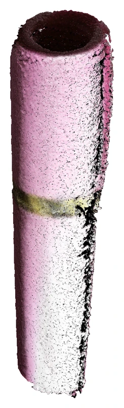
From a one-time room scan and single-camera RGB-D recordings to camera poses, full-body motion, and object trajectories in a shared metric scene frame.
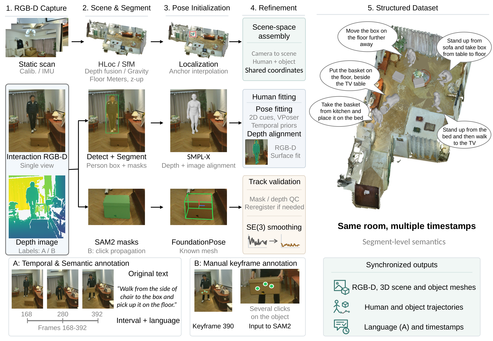
A unified benchmark on SituHOI for goal-conditioned human-object motion prediction, with flexible observation and forecast durations.
Drag the split and goal handles, use arrow keys, or choose a reported setting. The ruler measures elapsed time from the window start; the split is the paper’s t = 0. Dots mark reported splits at the current span.
± 0.66 mm across seeds
H = 0.25 s · F = 3.75 s — reported in the paper.
Evaluate the same model across varying observation and forecast durations, including unseen duration combinations.
Keep each recording within a single split, so overlapping motion windows never cross training, validation, and test sets.
Assess both trajectory accuracy and human-object coordination through position errors and wrist-object proximity.
A shared temporal predictor couples human and object motion, followed by object-translation refinement that preserves the supplied goal.
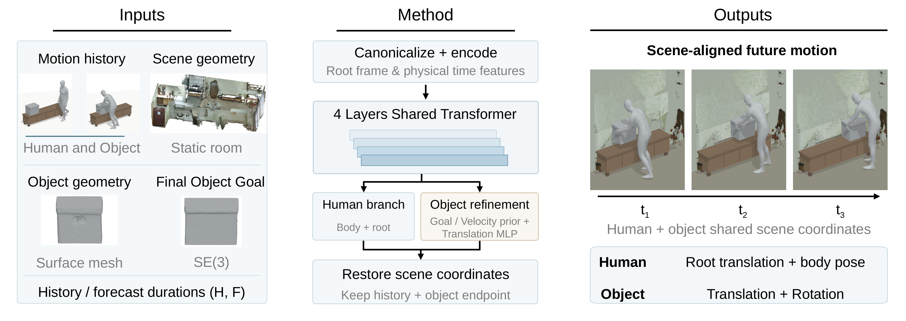
@misc{wang2026situhoi,
title = {SituHOI: Scalable Capture of Scene-Situated
Full-Body Human-Object Interaction},
author = {Qifan Wang and Qihang Fang and Boao Shi and
Yushi Du and Pei Zhou and Siyan Dong and Yanchao Yang},
year = {2026},
eprint = {2610.23980},
archivePrefix = {arXiv},
primaryClass = {cs.CV},
url = {https://arxiv.org/abs/2610.23980}
}